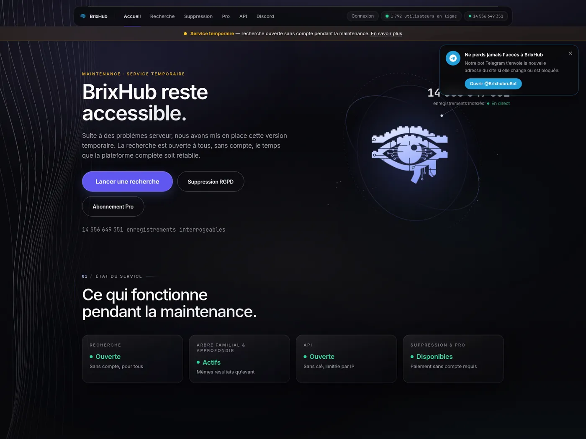
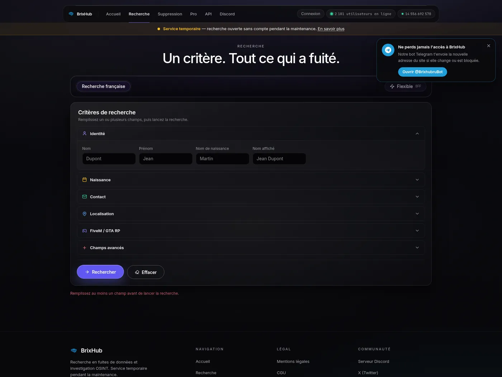
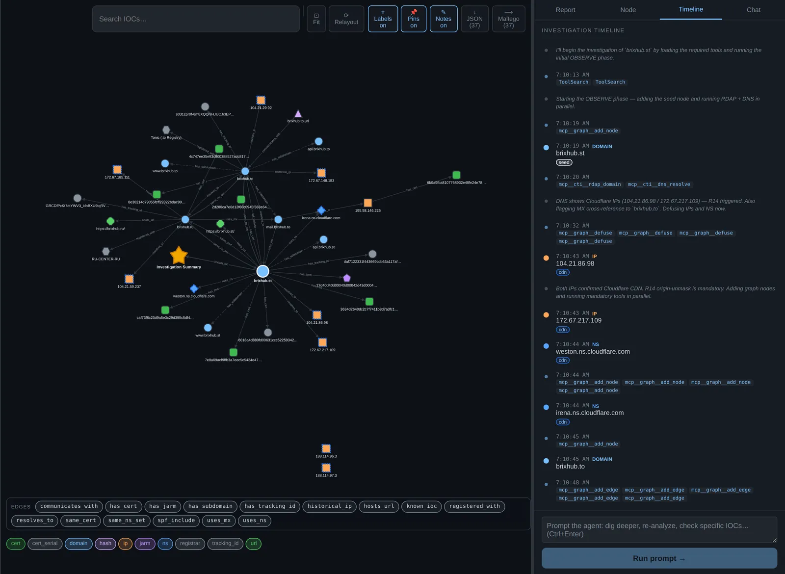

BrixHub : le moteur de recherche de vos données volées
Un site tape votre nom et recrache votre adresse, votre téléphone, votre numéro de sécu. Il dit indexer 14 milliards de fiches, issues de piratages. Et il vous propose de retirer la vôtre… contre paiement. Il est visé par la justice française, et pourtant il est toujours en ligne. J'ai regardé comment il tient.
Alexandre Pinoteauavec l'aide de Bounce
Deux articles, une même enquête. Tu peux passer de l'un à l'autre à tout moment.
Si tu ne lis que ça
Ne l'utilise pas, même par curiosité, même pour chercher ton propre nom. Chercher quelqu'un d'autre peut t'exposer à des poursuites, et la justice française a saisi un procureur sur ce site.
Ne paie jamais pour faire retirer ta fiche, et n'envoie jamais ta pièce d'identité. Tu paierais les gens qui ont tes données volées, et tu leur en donnerais une de plus.
Tu peux vérifier tes fuites gratuitement et sans danger sur haveibeenpwned.com, un service légitime qui n'affiche aucune donnée.
Si tes données traînent : change tes mots de passe importants, active la double authentification, et surveille tes comptes bancaires.
BrixHub, c'est un moteur de recherche. Mais au lieu de pages web, il fouille dans des fuites de données : les fichiers volés lors de piratages d'entreprises et d'administrations. Vous tapez un nom, un téléphone, un e-mail, et il vous rend une fiche. Il annonce plus de 14 milliards d'enregistrements.
En octobre 2026, la presse française s'en empare et la ministre du Numérique saisit la justice. Beaucoup se demandent ce que c'est, et si l'on peut s'en servir. La réponse courte : non, surtout pas. Voici pourquoi, et comment ce genre de site fonctionne.

La vitrine. Un design soigné, un compteur à 14 milliards, un bouton « Suppression RGPD », et même une bulle « notre bot Telegram t'envoie la nouvelle adresse si le site change ou est bloqué ». Tout est pensé pour rassurer et pour survivre aux blocages.
01D'où viennent ces données ?
De vraies fuites. Ces dernières années, quantité d'entreprises et d'organismes français se sont fait voler leurs fichiers clients : des opérateurs télécom, des mutuelles, des sites de commerce, des services publics. Chaque fuite, c'est des millions de personnes dont le nom, l'adresse, le téléphone ou pire se retrouvent dans la nature.
Un site comme BrixHub ne pirate rien lui-même. Il ramasse ces fichiers éparpillés, les recoupe, et les rend interrogeables d'un seul clic. C'est là tout le problème : une fuite isolée est pénible à exploiter, mais un moteur qui relie votre nom, votre adresse, votre téléphone et votre numéro de sécu sur une seule fiche, c'est une arme pour le harcèlement, l'usurpation d'identité et l'escroquerie.
À noter
BrixHub affiche fièrement des noms d'organismes publics comme sources. Aucun ne l'a confirmé, et je ne reprends pas ces affirmations : ce sont ses dires, pas des faits établis.
02Le vrai business : te vendre ta propre tranquillité
Le plus pervers n'est pas la recherche. C'est l'option « Suppression RGPD ». Le site vous propose, contre paiement, de retirer votre fiche. Autour de quelques euros pour une poignée de fiches, selon les témoignages. Parfois, une suppression « gratuite »… en échange d'une photo de votre pièce d'identité.
C'est le piège dans le piège
Vous paieriez les gens qui détiennent vos données volées, pour qu'ils promettent de les effacer. Rien ne garantit qu'ils le font. Et si vous envoyez votre pièce d'identité, vous leur donnez une donnée de plus, parfaitement authentique cette fois. La ministre déléguée au Numérique l'a dit publiquement le 5 octobre : « ne payez jamais pour faire retirer vos données » (AFP). Donc : ne payez pas, n'envoyez rien.
Et ce n'est pas qu'une mise en garde théorique. Sur X (ex-Twitter), des internautes racontent avoir payé pour faire retirer leur fiche : elle a bien disparu… quelques jours, avant de réapparaître. Normal : effacer une ligne d'un affichage ne fait pas disparaître la donnée du fichier volé, que l'opérateur garde. Il peut la remettre en ligne, la revendre, ou vous refaire payer.

Le formulaire de recherche. On y entre un nom, un prénom, une date de naissance. La promesse affichée : « Un critère. Tout ce qui a fuité. »
03Pourquoi n'est-il pas fermé ?
Parce que fermer un site comme celui-ci est bien plus dur qu'il n'y paraît. BrixHub joue sur trois tableaux :
Un paravent
Le site se cache derrière un intermédiaire technique (Cloudflare) qui masque l'adresse de son vrai serveur. On voit la façade, pas le bâtiment.
Des adresses jetables
Il change de nom de domaine dès qu'on en bloque un : .fun, .net, .site, .org, .cc, puis .to, .ru, .st… Quand une porte se ferme, une autre est déjà ouverte.
Des pays complaisants
Il choisit des extensions gérées par de petits pays (São Tomé pour .st, Tonga pour .to) qui ne surveillent pas les contenus et n'agissent que sur décision de justice.
Résultat : on ne peut pas le faire tomber d'un clic. Ce qui fait tomber ces sites, en général, ce n'est pas la fermeture du domaine, c'est l'arrestation des personnes qui les font tourner. Et ça prend du temps.
04Ce que dit la loi
Je ne suis pas juriste, mais voici ce qui ressort des sources :
Regarder le site n'est pas, en soi, une infraction identifiée.
Chercher quelqu'un d'autre, puis garder, partager ou utiliser le résultat, vous expose en revanche à de vrais risques : recel, collecte déloyale de données, voire harcèlement ou usurpation si vous visez une personne.
Exploiter le site (ceux qui le font tourner) relève de l'accès et de l'extraction frauduleuse de données : plusieurs années de prison et de lourdes amendes.
Le 5 octobre 2026, la ministre déléguée au Numérique a saisi la procureure de Paris. Son conseil, repris partout : « ne payez jamais pour faire retirer vos données ».
Tu es peut-être dans leurs fichiers. Que faire ?
Ne va pas vérifier sur BrixHub. Utilise haveibeenpwned.com (entre ton e-mail, il te dit dans quelles fuites connues il apparaît).
Change les mots de passe des comptes concernés, et active partout la double authentification.
Méfie-toi des arnaques ciblées : avec ces données, on peut te joindre en se faisant passer pour ta banque ou un service public. Dans le doute, raccroche et rappelle le numéro officiel.
Si ta fiche est en ligne : garde une capture de ta seule fiche comme preuve, signale, et saisis la CNIL si rien ne bouge. Ne paie pas.
Partage-le
Beaucoup de gens vont « juste vérifier leur nom » sans savoir que c'est une mauvaise idée. Préviens-les.
TL;DR
BrixHub : moteur de recherche de données issues de fuites, francophone, revendiquant ~14,5 milliards d'enregistrements et vendant le retrait de fiche. Saisine du procureur de Paris le 05/10/2026 (art. 40 CPP).
Rotation de domaines sur une douzaine de TLD depuis février 2026 : .fun → .net → .site → .org → .cc → .to → .ru → .st. Trois actifs au 21/10 (.to, .ru, .st), même paire de NS Cloudflare.
Origine web jamais démasquée (tout derrière Cloudflare). La seule infra hors CDN : un serveur mail dédié, 195.58.146[.]225 (M247), vers lequel les trois domaines délèguent leur courrier.
Résilience délibérée : ccTLD à faible coopération (.st São Tomé, .to Tonga), proxy de confidentialité, bot Telegram pour annoncer les nouvelles adresses.
Enquête passive (Bounce + urlscan + presse). Rien saisi, aucune requête vers le service au-delà d'un navigateur ordinaire, aucune attribution.
01Contexte et méthode
BrixHub est un « moteur de recherche de fuites » (data leak search engine) en langue française. Il indexe des bases issues de compromissions et propose une recherche nominative, plus une suppression de fiche payante. Il est visé en France par un signalement pénal depuis le 05/10/2026. La question de départ était simple : peut-on utiliser son API ? Cette enquête y répond.
Règles d'engagement
Sources publiques et passives : WHOIS/RDAP auprès des registres, DNS, Certificate Transparency, urlscan.io, VirusTotal, Shodan/InternetDB, DNS passif, presse. Première passe avec l'agent CTI Bounce, complétée à la main. Je ne me suis jamais connecté au service, je n'y ai lancé aucune recherche, et je n'ai contourné aucune protection (la page répond un défi Cloudflare 403 à un client sans navigateur, non contourné). Domaines défangés ([.]).
02Ce que le service prétend
D'après ses propres pages et la presse (chiffres à prendre comme des revendications, pas des faits) :
14,5 Mdd'enregistrements revendiqués (compteur en page d'accueil)
~5 €pour retirer 10 fiches, selon les témoignages
10→90 €abonnements, « par mois » à « à vie »
12+domaines successifs depuis février 2026
Recherche par nom, e-mail, téléphone, identifiant Discord ; données annoncées jusqu'au NIR et à l'IBAN ; couverture France, Belgique, Suisse. Un onglet « arbre familial », une « API ouverte, sans clé, limitée par IP » (c'est la réponse à la question initiale : il affiche une API, l'utiliser revient à extraire sciemment des données volées), un bot Telegram et un compte X. Mentions légales évoquant une « société basée en Russie », sans nom. Aucune de ces revendications n'est vérifiable de l'extérieur, et je ne les tiens pas pour acquises.
03Infrastructure : une façade, pas de bâtiment
Tout le web est derrière Cloudflare, sur les trois domaines actifs. L'origine n'a jamais fui. Les empreintes partagées confirment un même opérateur :
Domaine
Créé
Registre
État au 21/10
brixhub[.]to
26/06/2026
Tonic (Tonga)
actif
brixhub[.]ru
27/08/2026
RU-CENTER, « Private Person », non vérifié
actif
brixhub[.]st
30/09/2026
ST Registry (São Tomé), titulaire masqué
actif (canonique)
+ .fun, .net, .site, .org, .top, .cc (févr.–juin 2026) : suspendus par leurs registrars ou éteints.
Trois marqueurs lient les domaines actifs : la même paire de serveurs de noms Cloudflare (irena / weston), la même politique SPF (v=spf1 mx:brixhub[.]to -all) et le même titre de page. Le .st est né le 30/09, cinq jours avant le signalement de la ministre.

Le graphe Bounce. Les trois domaines (.st, .to, .ru) convergent vers la même paire de NS Cloudflare et le même serveur mail. À droite, le journal de l'agent, qui désamorce les IP Cloudflare (inutiles comme pivots) et se concentre sur ce qui dépasse.
La seule fuite : le serveur mail
L'origine web est masquée, mais le courrier ne l'est pas. Les trois domaines délèguent leur mail (MX et SPF) à mail.brixhub[.]to, qui résout vers une IP hors Cloudflare :
mail.brixhub[.]to → 195.58.146[.]225
AS9009 M247 · ptr mail.brixhub.to
Postfix + OpenSSH 9.6p1 · Ubuntu 24.04
cert SMTP auto-signé, CN=mail.brixhub.to (04/10/2026, valide 10 ans)
pas d'autre domaine observé sur cette IP en DNS passif
C'est le seul point d'infrastructure propre à l'opérateur que l'enquête ait exposé. Il ne « démasque » pas le site web (hébergé ailleurs, derrière Cloudflare), mais c'est un pivot solide : une IP dédiée, un hébergeur nommé, un certificat daté. Bounce lui-même l'a relevé dans son autocritique : cette IP « mail » était la cible d'enrichissement la plus intéressante, et le point faible de la configuration de l'opérateur.
04Pourquoi il reste en ligne
La résilience de BrixHub n'a rien d'accidentel. Elle repose sur quatre choix :
Un front Cloudflare qui masque l'hébergeur réel et absorbe les signalements d'abus.
Une rotation de domaines sur des TLD variés. Les gTLD classiques (.fun, .cc, .site, .org) ont été suspendus par leurs registrars entre juin et août ; l'opérateur a migré à chaque fois vers un ccTLD plus coopérant.
Des registres à faible coopération. Le registre du .st (São Tomé, back-end suédois) précise dans sa politique qu'il « ne surveille pas les contenus » et n'annule un domaine que sur décision d'un tribunal compétent. Le .to (Tonga, opérateur Tonic) a la même réputation, même s'il a déjà suspendu des domaines sur ordonnance judiciaire.
Un canal de repli. Un bot Telegram annonce la nouvelle adresse à chaque bascule, et le mail reste ancré sur .to quoi qu'il arrive. Le service survit à la perte de n'importe lequel de ses domaines.
Autrement dit : ce n'est pas la saisie d'un domaine qui fait tomber ces services, c'est l'interpellation des opérateurs. Les précédents le montrent : WeLeakInfo (saisi en 2020), RaidForums (2022), les administrateurs de BreachForums (interpellés en France en 2025), et plusieurs « lookups » français démantelés en 2026 avec des interpellations. À chaque fois, l'enquête judiciaire, pas le blocage technique.
05Est-ce légal ? Peut-on utiliser leur API ?
Non, et non. Synthèse juridique (d'après des analyses d'avocats et la presse ; je ne suis pas juriste) :
Côté
Ce qui est en jeu
Exploitant
Accès et extraction frauduleuse de données (art. 323-1 et s. du code pénal), jusqu'à plusieurs années de prison et de lourdes amendes.
Utilisateur
Consulter n'est pas une infraction identifiée en soi. Mais chercher un tiers puis détenir, partager ou utiliser le résultat expose au recel (art. 321-1), à la collecte déloyale (226-18), voire au harcèlement ou à l'usurpation (223-1-1). Payer ou envoyer sa pièce d'identité aggrave l'exposition.
API
Un accès automatisé à une base de données volées, c'est de l'extraction délibérée et à l'échelle. Et cela finance un service d'extorsion. À proscrire.
La Cour de cassation a d'ailleurs admis en février 2026 que l'information immatérielle peut être recelée. L'affaire portait sur des secrets d'affaires, pas sur des fuites de données, mais le principe fragilise l'idée qu'« utiliser » ces données serait sans risque.
La bonne alternative
Pour vérifier tes propres fuites, sans financer ni enrichir personne : Have I Been Pwned. Il t'indique dans quelles fuites connues ton e-mail apparaît, et n'affiche jamais les données elles-mêmes. C'est le contre-exemple légal de BrixHub.
06Ce que l'enquête ne tranche pas
Par honnêteté, les limites :
L'hébergeur réel du site et l'identité des opérateurs : masqués. Rien d'attribuable par les seules sources passives.
L'origine réelle des données : le site affiche des sources prestigieuses (organismes publics), aucune confirmée. Je ne reprends pas ces affirmations.
Les montants exacts et l'existence réelle de l'API et des abonnements reposent sur des témoignages de seconde main. Même chose pour les fiches payées puis réapparues : ce sont des témoignages d'internautes sur X, cohérents avec le fonctionnement du service, mais que je n'ai pas pu vérifier un par un.
Plusieurs articles de presse (franceinfo, Le Monde, Siècle Digital…) n'ont pas pu être lus en entier, seulement par leurs titres et extraits.
AFP / Techniques de l'ingénieur (05/10/2026) — saisine du procureur, art. 40 CPP, « ne payez jamais ».
franceinfo, Siècle Digital, Senioractu, Next (oct. 2026) — nature du service, chronologie.
Zataz — démantèlement de « lookups » français, interpellations 2026.
CNIL — position générale sur les services de recherche de données et les faux services d'effacement.
WHOIS / RDAP des registres, Certificate Transparency, urlscan.io, Shodan, DNS passif — consultés le 16 et le 21/10/2026.
Politiques des registres .st (nic.st / Bahnhof) et .to (Tonic).
Partage
Enquête menée avec Bounce, sur sources publiques et passives. Aucune connexion au service, aucune recherche lancée, aucun contournement de protection, aucune personne nommée. Indicateurs défangés ([.]). Si vos données ont fuité : haveibeenpwned.com, ne payez personne.